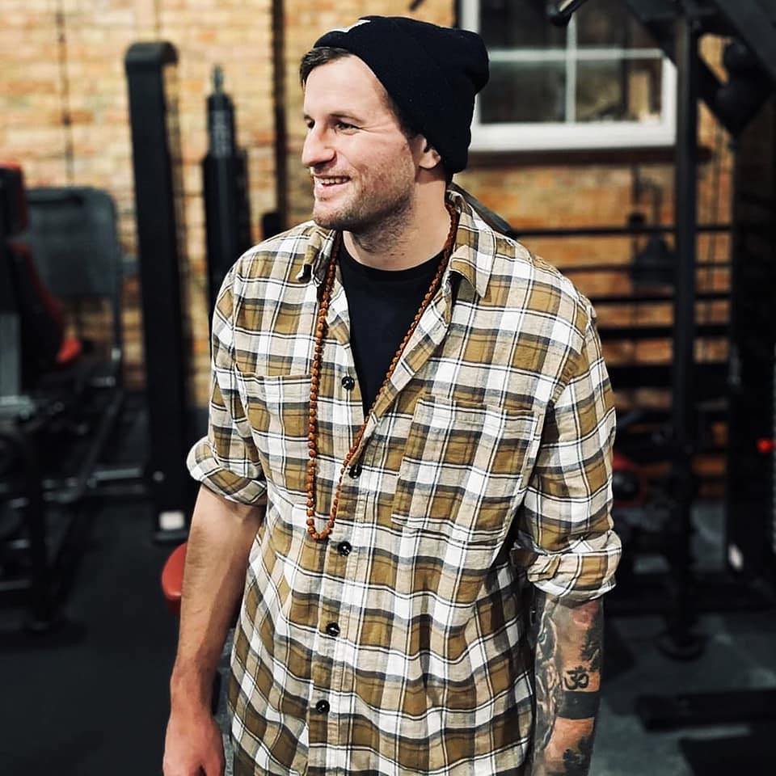

Michał Czupa

Contact Details:
| Gdańsk, Poland
| czupamichal@gmail.com
+48 731 745 566
https://www.linkedin.com/in/michal-czupa-89800b115/
https://www.github.com/amplifiedanima
Skills
Python/Django **
Webscraping basics *
(BeautifulSoup/Requests etc.)
HTML/CSS **
Javascript/React **
SQL *
GIT *
Education:
Bachelor's Degree in English Philology (English Linguistics)
University of technology (Politechnika Koszalińska) 2012-2015, Koszalin
Interests and hobbies:
Physical activity
(Strength training/Brazilian Jiu-Jitsu)
Medical industry
Programming
Travelling
Experience
Certified medical interpreter (Polish-English)(OPI)
LanguageLine Solutions
May 2021- Now | Remote
Interpreting English - Polish conversations in real-time for:
- Healthcare (all types of medical appointments)
- Official institutions
- Police
- Emergency services
- Social services
- Finance institutions
- Insurance companies
- Airports
- Shops
Yoga Instructor/Strength and Conditioning coach
Self-employed
September 2019- Now | Poland
Organizing and conducting workouts:
- Group activities for children
- Strength and conditioning sessions
- Working on training sessions with amateur athletes on:
- maximal/submaximal strength
- dynamic effort/power training/ reactive strength
- overall fitness (general physical preparation)
- capacicty
- Hatha yoga classes
- Joint mobility training sessions
- Working with clients 1 on 1 / Personal training
Construction worker
Pluimers Isolatie
October 2017 - August 2019 | Rijssen, Netherlands
- Travelling around Netherlands,Germany and Belgium - completing various contracts
CNC Saw operator (Stonemason)
Stone Masters
May 2016 – September 2017 | Perivale, London
- Making all sorts of different stone-made kitchen Countertops (Quartz,Marble,Granite etc.)
Pawnbroker(Customer service)
Pawnshop Black
April 2014 – October 2015 | Koszalin, Poland